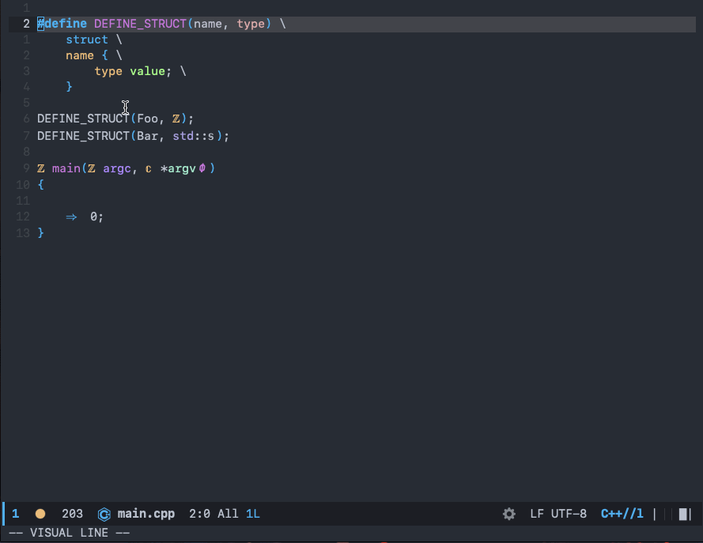

安装RTags
前言
在使用 RTags 预处理 C/C++这篇文章中提到了 rtags 的使用，于是我在 Linux 中使用的时候碰到了安装的问题并顺利解决了。
然后又在 Mac 上进行了尝试，也碰到了问题，记录一下，希望能帮助需要的人。
在使用 RTags 预处理 C/C++这篇文章中提到了 rtags 的使用，于是我在 Linux 中使用的时候碰到了安装的问题并顺利解决了。
然后又在 Mac 上进行了尝试，也碰到了问题，记录一下，希望能帮助需要的人。
使用 C/C++ 开发的项目，在进行测试的时候，要么自己写一些简单的例子进行测试，要么使用第三方框架。自己写简单的例子对于大项目来说效率就不高，而且输出的结果就不是很专业，不能得到一个测试报告。
所以我们有必要选择一个比较好的测试框架来对代码进行测试，今天要介绍的就是谷歌的测试框架 google/googletest: GoogleTest - Google Testing and Mocking Framework
在开发过程中，我们难免会使用到第三方库，在 C/C++ 中使用第三库都是把源码下载下来，然后进行编译。
在多人协作的时候，每个人都需要在自己的电脑上编译一遍，非常的麻烦，编译时间也会随着库的增加不断增加。
其它语言也有这个问题，它们有包管理工具来管理这些依赖，比如 Java 的 Maven 、 Gradle ， Rust 的 cargo ， Python 的 pip ， Node 的 npm 、 yarn 等，使用起来非常方便。
C/C++ 在包依赖管理工具上一直没有一个较好的，不过还是有一些工具的，我们今天要介绍的就是 JFrog 推出的 Conan 。
最近被问到 HTTP/2 有什么特点，我只答了个多路复用，当时脑子还想到了二进制分帧和头部压缩，我以为是 HTTP/3 的就没答上来。
由于 HTTP/2 普及率不高，而且最近 IETF 将 QUIC 发布为 RFC9000，这意味着 HTTP/3 即将到来。所以很有可能会跳过 HTTP/2 直接进入 HTTP/3 ，所以对 HTTP/2 没有了解太多。
不过既然被问到了那就好好学一下 HTTP/2 。
前阵子复习 AIDL 相关的知识，知道 AIDL 不支持 short 类型，但是我却发现同样使用 AIDL 的 Messenger 却可以。
这是怎么回事，本文将探索这其中原因。
之前研究 mmap 发现有一个地方不是非常理解，为什么使用 mmap 完成了文件到进程地址空间的映射还要调用 msync 来进行同步？
我经过查找资料后找到了答案，由于讲到的人比较少，所以便有了此文，希望对同样有困惑的人有帮助。
Messenger 在 Android 中和 AIDL 一样，用于进程间通信的技术，也是基于 AIDL 的封装。
在使用 RTags 预处理 C/C++中，我介绍了使用 RTags 来进行预处理，然后在实践中发现了另外一个工具也可以做到，那就是 ccls 。
今天就来介绍在 ccls 如何查看预处理之后的代码。
先来看一个动图

我们在使用 C/C++ 的时候，或多或少都会碰到宏，不论是自己写的还是别人写的。在使用宏的时候，如果有点复杂那很难看懂，并且非常容易出错，如果能够在编写代码的时候就知道宏展开之后的样子，将会大大提高编码效率，提高正确性。
本篇文章将要介绍在 Emacs 中使用 RTags 来查看宏展开后的样子。
最近发现在 C++ 的代码中还有不少是 C 语言的代码，于是想要把 C 的写法改成 C++ 的写法。
其中碰到了 C++ 初始化的问题，查阅资料后发现有坑，于是便有了此文。
Magit 是 Emacs 中的一个用于管理 Git 的工具，可以理解为 Git 的前端操作界面。和 SourceTree 客户端类似，不过功能却强大太多了，这也是我使用 Emacs 的一个重要理由。
Magit 中有许多非常强大的功能，这里介绍几个非常有用，但是又不容易记住的。
本文的 Magit 所使用的快捷键需要配合 evil-mode 使用。
平时写 Java 代码对创建的对象，我们很少会去关心怎么手动释放内存，大多数时候都有 GC 去帮我们回收。
然而在 JNI 中，几乎都是 C/C++ 的代码，它们是没有 GC 的，所以对内存的使用就需要格外小心了。
因此在 JNI 中提供了三种引用类型，分别是局部引用、全局引用、弱全局引用。下面介绍这三种引用。
本文基于 Android10 ，分析 Zygote 与 AMS 是如何使用 LocalSocket 建立连接的。
Zygote 是 Android 中所有 App 的父进程，有着举足轻重的地位。了解了 Zygote 可以让你对系统如何工作有更深入的了解，今天来学习一下 Zygote 的知识。
本文基于 Android10
上一篇文章，我们从 Java 层探索了消息机制的原理，以及在使用中会碰到的问题，这一篇从 MessageQueue 入手，带你了解 Native 层的原理。
本文源码基于 Android10
Handler 在 Android 中的地位不用多说了，没有消息机制则寸步难行。
通常我们会使用 Handler 在主线程与子线程之间通信，那么它们是怎么通信的，有什么玄机？
本文会带你从 Java 层的源码了解其原理，以及在使用过程中要注意的地方。下一篇则从 Native 层了解背后的原理。
最近读了一些 Android 源码，发现其中不少是用 pipe 机制来实现的，并且和我们往常使用 pipe 有些不一样。
有必要学习一下 pipe 的使用，不然会影响阅读源码，并且 Android 里的使用方式比较有技巧。
自 C++11 以来，引入了移动构造函数和移动赋值函数，使得在构造对象的时候可以减少调用次数，以提高性能。
所以 C++的构造函数从 3 个变成了 5 个，分别是构造函数、拷贝构造函数、拷贝赋值函数、移动构造函数、移动赋值函数。
它们非常相似，放在一起容易搞混，于是总结一下，便有了此文，希望能够对大家有所帮助。